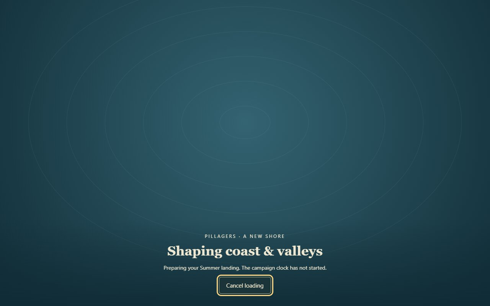
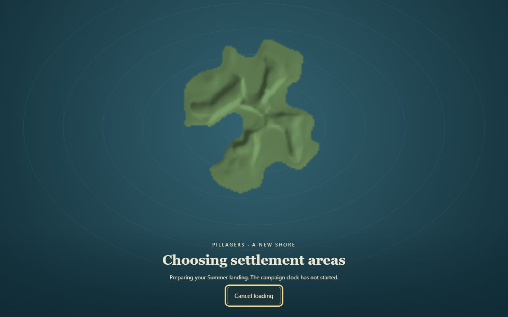
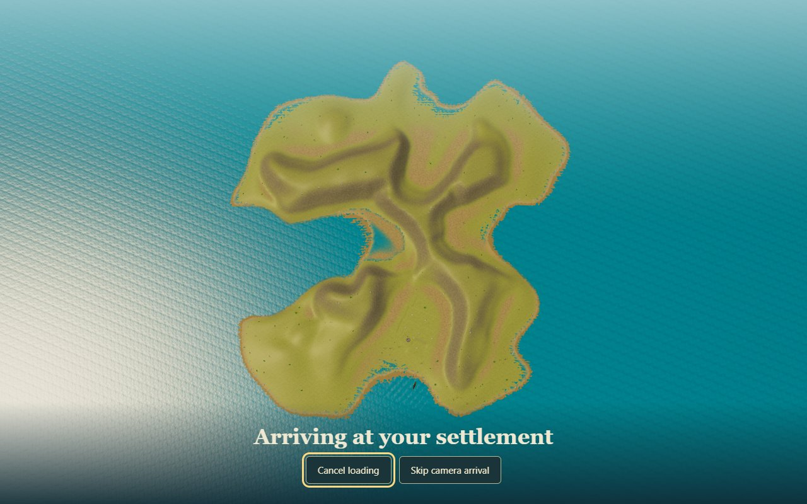
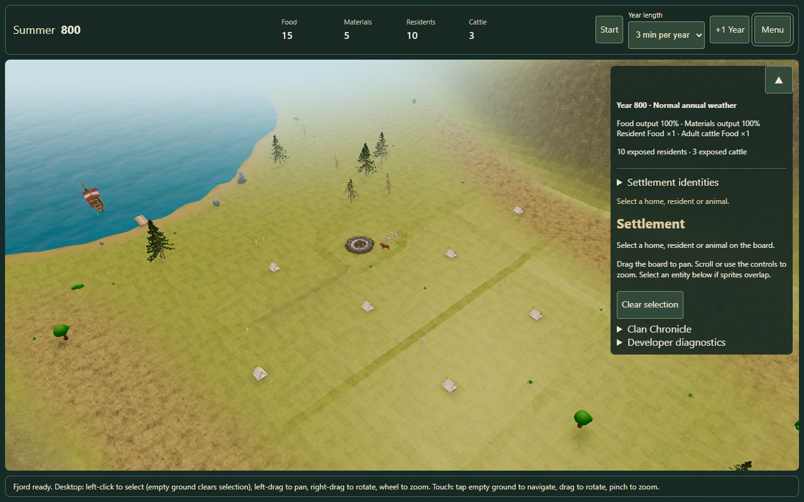
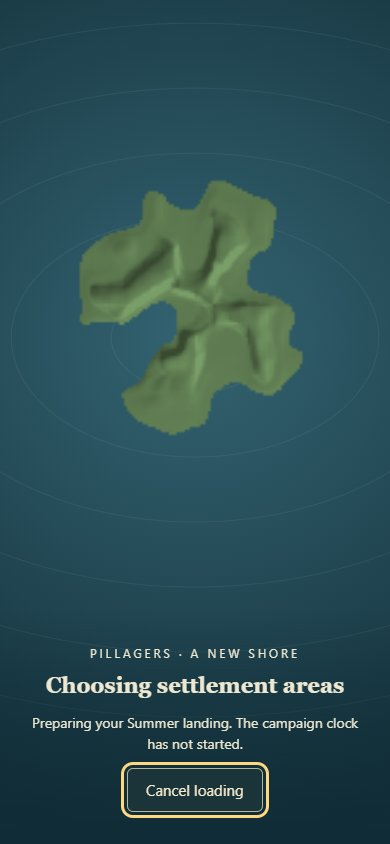
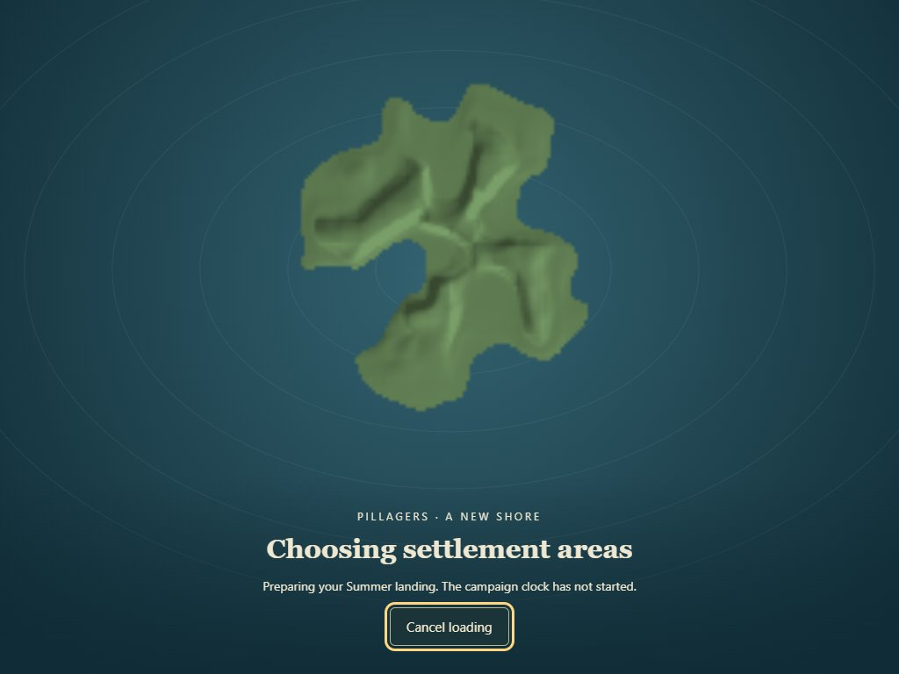

Issue #153 · new campaigns only
A new shore, without the generation freeze
The same canonical island is prepared in a worker. A lightweight sea and terrain preview leads into the real 3D settlement. The clock starts after arrival at Summer 800, tick 500.
Use a fresh tab or the game's New campaign action to see the introduction. Existing saved campaigns do not replay it. Please review the complete sequence on your iPhone/iPad: moving sea → actual island relief → ground colours → arrival → usable settlement. Cancel and Skip should respond, and the opening should stay in Summer.

1. The sea preview appears before heavy generation; Cancel loading stays available.

2. Sampled heights and existing zoning colours show the actual island. The preview contains no rival sites or private data.

3. A short, skippable camera arrival. Reduced motion goes directly to the final view.

4. The real settlement, ready at the approved Summer start.
Measured loading
Windows Edge with touch emulation on this development laptop. These runs do not certify physical iPhone/iPad performance. A long browser/driver operation can still delay input; elapsed load time is not a fixed SLA.
Mobile and tablet

390 × 844 mobile layout.
1024 × 768 tablet layout.
Visual acceptance remains with the owner. This PR does not auto-merge.